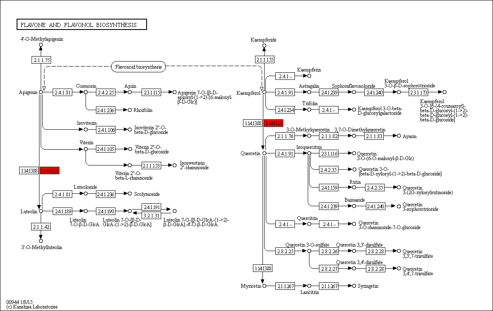

Flavone and flavonol biosynthesis - Oryza sativa japonica (Japanese rice) (RefSeq)
[
Pathway menu
|
Organism menu
|
Pathway entry
|
Download KGML
|
Show description
|
User data mapping
]
Flavones and flavonols (3-hydroxyflavones) are common flavonoids in the plant kingdom. They are synthesized as part of the flavonoid modification pathways in aglycone and glucoside forms.
Reference pathway
Reference pathway (KO)
Reference pathway (EC)
Reference pathway (Reaction)
-----< Set personalized menu >-----
-----< Sort below by alphabet >-----
Arabidopsis thaliana (thale cress)
Populus trichocarpa (black cottonwood)
Vitis vinifera (wine grape)
Oryza sativa japonica (Japanese rice) (RefSeq)
184%
150%
122%
100%
82%
67%
55%

 Flavone and flavonol biosynthesis - Oryza sativa japonica (Japanese rice) (RefSeq)
Flavone and flavonol biosynthesis - Oryza sativa japonica (Japanese rice) (RefSeq)